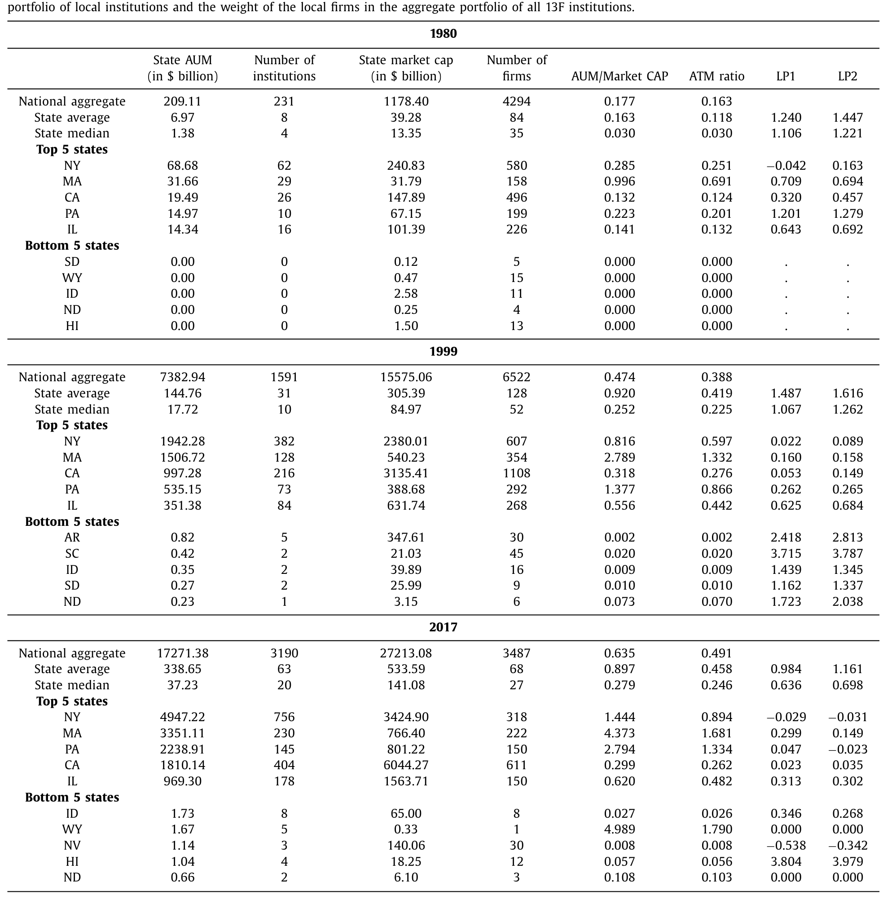
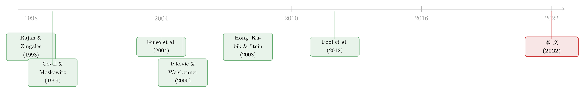

钱住在波士顿，公司开在德州：一道被「地理错位」撑高的估值
本文读的是 Kim, Wang & Wang (2022, JFE)：美国的资产管理业高度扎堆在纽约、波士顿、加州，而上市公司却扎堆在另一些州——两张「地图」对不齐。作者发现，本地机构投资者越「多」（相对于本地公司的体量），当地公司的估值就越高；而这份溢价并非来自「钱多抬价」的贴现率渠道，而是来自机构帮本地公司缓解了融资约束的融资—信息渠道。
1 引言：一个本不该存在的错位
先从一个常识说起。美国的股票市场是全国统一的：纽约的基金可以一键买下德州的公司，加州的养老金可以满仓波士顿的股票。资本在国境之内几乎无摩擦地流动。既然如此，一家公司「身边」有没有钱，按理说根本不该影响它的命运——它要的钱，全国的资本都能供给。
可现实偏偏不是这样。
我们先看一组数字。截至 2017 年底，资产管理业最集中的五个州——纽约、马萨诸塞、加州、宾州、伊利诺伊——握着全美机构投资者 77% 的境内股票持仓。而上市公司最集中的五个州（纽约、加州、德州、伊利诺伊、华盛顿）占了全美总市值的 54%。两份榜单只是部分重叠，钱聚集的地方，和公司聚集的地方，并不是同一批州。
错位有多离谱？以马萨诸塞为例：当地金融机构手里的股票持仓高达 $3.35 万亿，可它本州上市公司的总市值只有 $0.76 万亿——钱是公司的四倍还多。德州正好相反：本地机构只持有 $0.45 万亿股票，而本州公司市值却有 $2.00 万亿。一边是「钱多公司少」，一边是「公司多钱少」。作者用一个简洁的比率把这种错位刻画出来：
$$\text{ATM}_{s,t} = \ln\!\left(1 + \frac{\text{AUM}_{s,t}}{\text{MKTCAP}_{s,t}}\right)$$
这里 \(\text{AUM}_{s,t}\) 是 \(s\) 州所有 13F 机构在 \(t\) 年持有的境内股票总额，\(\text{MKTCAP}_{s,t}\) 是该州上市公司的总市值。作者把这个比率叫做 ATM 比率（asset-to-market capitalization ratio），并且全文都用它来代表「本地机构投资者的相对存在感」。ATM 越高，意味着相对于本地公司的体量，本地机构这「一池子钱」越大。2017 年，这个原始比率（取对数前）从加州的 0.30 一路飙到马萨诸塞的 4.37。

Table 1
于是一个自然的问题浮出水面：这种投资者与公司之间的地理错位，对公司本身重要吗？ 在一个号称无摩擦的全国市场里，它本不该重要。但如果它真的重要，那就说明地理摩擦远比我们以为的更顽固。
2 张力从何而来：本地偏好这堵墙
要让「身边有没有钱」变得重要，必须先有一堵墙，把全国的资本挡在外面。这堵墙，就是 本地偏好（local bias）。
这条线索其实早有铺垫。Coval and Moskowitz（1999, 2001）发现美国共同基金对本地公司有显著的「本地偏好」，它们更愿意买总部就在附近的股票，而且本地持仓还能赚到超额收益——近水楼台，信息确实更灵。Ivkovic and Weisbenner（2005）在散户身上也看到同样的偏好。换句话说，钱并不真的「全国自由流动」，它更愿意待在家门口。
接着，一个更关键的推论是 Hong, Kubik and Stein（2008）那篇著名的 "only game in town"：如果本地投资者偏爱本地股票，而某地「钱多股票少」，那么这堆本地的钱就会去争抢有限的本地股票，把价格抬上去——这是一个纯粹的 需求—贴现率渠道：估值高，不是因为公司基本面好，而是因为本地需求旺盛、未来预期收益（贴现率）被压低了。Hong 等人用一个叫 HKS 比率的变量（本地公司账面值之和 / 本地居民总收入）来度量这种「本地需求压力」，并发现它能解释公司估值。
到这里，故事似乎已经讲完了：地理错位会影响估值，靠的是本地散户的「抬价」。但本文真正想问的是——当主角从散户换成机构投资者，故事还一样吗？
3 识别策略：把位置当成给定，再想办法堵漏
这是全文最该被认真对待的地方。
作者的基准做法，是把机构和公司的位置都当作外生给定，然后用 1980–2017 年的面板，把公司估值（用 Hong et al. 2008 的口径，即 市值账面比 market-to-book 作为代理）对所在州的 ATM 比率做回归，控制公司特征、行业、以及当地经济活力等变量。
但他们很清楚，最大的威胁是 「位置匹配（location matching）」：会不会是那些成长性好、长期需要股权融资的公司，故意搬到机构扎堆的地方去？如果是，那 ATM 与估值的正相关就是「公司挑地方」造成的内生性，而非因果。
作者用了两步来堵这个漏洞，而且堵得相当聪明：
首先，他们指出方向上的偏差对自己有利。本文的估值结果关心的是机构与公司之间的「错位」；如果法律、经济、人口等因素同时把基金和公司往同一个方向推（即两者地理分布趋同），那只会削弱而非制造这种错位。所以位置匹配如果存在，反而是 bias against 他们的发现。
接着，更直接的一招：他们专门挑出那些跨州搬迁总部的公司来看。结果发现，样本期内上市公司总体上是从高 ATM 州搬向低 ATM 州的；哪怕是其中更「依赖股权融资」的那批公司，机构投资者的存在感在它们的选址里也没扮演任何特殊角色。换句话说，公司搬家是冲着劳动力、税负这些成本去的（这与 Strauss-Kahn and Vives 2009 记录的趋势一致），而不是冲着「身边的钱」去的。这就直接否定了「公司追着机构跑」的故事。
然后，真正关键的一步，是找一个外生冲击。作者用了 2000–2002 年的 互联网泡沫破灭（dot-com collapse）：泡沫破裂前，某些州的机构重仓了科技股；泡沫破裂后，这些州的机构存在感被狠狠打击了一把。作者去看这些「高暴露」州里的非科技公司——它们本身和泡沫无关，却因为本地机构受了重创而「躺枪」。结果：泡沫后，这些更受影响州里的公司，估值显著更低。这个准自然实验，把「本地机构存在感 → 公司估值」的因果链条又夯实了一层。
这里有个容易被忽略的细节：作者特意论证了很多类机构的选址其实是外生的——公共养老金、慈善基金、大学捐赠基金的位置由机构本身决定，与投资需求无关；公司养老金、银行、保险公司也是如此，因为它们的主业并不是资产管理。这为「把机构位置当外生」提供了现实依据。
4 数据
- 机构位置：来自 SEC Edgar 系统的 13F 申报（1993 年起电子化），早年用 Nelson's Directories 和 Money Market Directories 补全；涵盖 50 个州加华盛顿特区。持仓数据来自 Thomson Reuters 13F 数据库。管理资产超过
$1亿的机构须按季披露持仓。 - 公司样本：1980–2017 年在 NYSE、Amex、Nasdaq 上市的美国本土公司，普通股（share code 10/11），剔除金融业（1 位 SIC = 6）与公用事业（1 位 SIC = 4）。会计数据来自
COMPUSTAT，股价与股数来自CRSP。公司位置定义为总部所在地。 - 观测单元：公司—年；位置变量在州、MSA、CSA 与人口普查区四个层级都构造，以检验稳健性。
- 样本量级：机构数从 1980 年的
231家，增长到 1999 年的1591家、2017 年的3190家；公司数则从4294起伏到6522、再回落到3487。机构持仓 / 公司市值这个全国比率，从 1980 年的17.7%一路升到 2017 年的63.5%——机构在美国股市的统治力，肉眼可见地变强。
5 主要结果：4% 的溢价，落在最「缺钱」的公司身上
先给结论的量级。控制了各种因素后，ATM 比率比样本均值高一个标准差，公司估值大约高 4%。落到具体的州上：仅仅因为两州机构存在感的差异，马萨诸塞的公司估值平均比德州的公司高出约 5%。
但真正有说服力的，是横截面上的异质性。如果这份溢价真的来自「机构帮公司缓解了融资约束」，那它就该集中出现在最缺钱、最依赖外部股权的公司身上。作者按四种口径切分样本：公司规模、Kaplan–Zingales（KZ）融资约束指数、分红水平、以及 McLean and Zhao（2014）的综合财务依赖度。结果非常干净：对小公司、受融资约束的公司、以及整体更依赖股权融资的公司，本地机构存在感的估值效应明显更强。
这正是一个「融资约束故事」该有的样子——钱对那些不缺钱的大公司无所谓，对那些等米下锅的小公司才生死攸关。
稳健性方面：结果对不同的「本地」定义都成立，只是 MSA 和 CSA 层级略弱一些；在样本后半段（机构地位更重要的时期）结果更强。
6 全文的核心：两条渠道的对决
到这里，本文与 Hong et al.（2008）的分野，才是整篇论文的灵魂所在。我把它单独拎出来讲透。
摆在桌面上的，是两条互不排斥、但机制截然不同的解释：
- 贴现率渠道（discount rate channel）：本地的钱多，争抢本地有限的股票，把价格抬高、把预期收益压低。这是 Hong et al.（2008）强调的需求驱动。它的可证伪含义很硬——如果估值高是因为贴现率被压低，那么高 ATM 州的公司，未来的股票收益率就该更低。
- 融资—信息渠道（financing/information channel）：本地机构因为地理临近，更懂本地公司（信息优势），也更便于监督；它们的存在缓解了本地公司的融资约束，让好项目能拿到钱。这条渠道不靠抬价，而靠改善公司的真实投融资决策。
怎么分辨？作者做了一件干净利落的事：直接把 ATM 比率（以及 Hong 等人的 HKS 比率）拿去解释股票收益率。
于是反转出现了。 结果显示：ATM 比率与股票收益率毫无关系；HKS 比率与收益率甚至是（不显著的）负相关——方向恰好与贴现率渠道的预测相反。也就是说，无论用机构口径还是用 Hong 等人的散户口径，在这个样本里都找不到贴现率驱动的估值效应。既然估值高了、未来收益却没变低，那这份溢价就不可能主要来自「钱多抬价」。
那它来自哪里？答案只能是另一条渠道：机构帮公司把融资这件事变容易了。
还有一个更漂亮的、几乎是「点睛」的对照：作者构造了两个度量机构本地偏好强弱的变量（见表 1 注释中的 LP1、LP2）。LP1 是「本地公司在本地机构组合中的权重」减「本地公司在市场组合中的权重」；LP2 则是减「本地公司在全体 13F 机构组合中的权重」。如果是「本地偏好抬价」的故事，本地偏好越强，估值就该越高。可结果是——本地偏好本身，并不正向影响估值，甚至与估值负相关。原因很微妙：恰恰是那些机构整体存在感很弱的州，本地偏好才显得格外强（没多少机构，仅有的几家又只买本地）。
这是本文最该被记住的一句话：起作用的是本地机构的「相对体量」（ATM 比率），而不是它们「本地偏好」的强度。 把这两件事混为一谈，就会得出完全相反的结论。
（关于「谁持有一项资产、就如何改变它的价格」这个更一般的主题，可参见《谁在持有这张债券，决定了它的价格》。）
7 机制落地：投资与融资里的指纹
光说「缓解融资约束」还不够，得在公司的真实行为里找到指纹。作者沿着投资和融资两条线，把机制坐实：
投资端。 高 ATM 州的公司，投资更多，而且投资—现金流敏感性（investment-cash flow sensitivity）显著更低——这是融资约束放松的经典标志：当你不必死等内部现金流，你的投资就不再被自己的钱袋子卡住。更进一步，这些公司对投资机会（用托宾 Q 代理）反应更灵敏；而且它们更多地投向与后续业绩正相关的研发（R&D），更少地投向与业绩负相关的资本开支（capex）。换句话说，松绑之后，公司不是乱花钱，而是把钱投到了真正能创造价值的地方。
融资端。 高 ATM 州的公司，股权发行的倾向更高，而债务发行则与 ATM 比率没有显著关系。更直接的证据是：本地机构会超比例地认购本地公司新发行的股票。这条完美呼应了信息—融资渠道：本地机构因为更懂本地公司，愿意也敢于去接它们新发的股权，于是本地公司在需要钱时，更容易走股权这条路。
两端拼在一起，机制就完整了：地理临近 → 信息优势与监督 → 本地机构愿意为本地公司提供（尤其是股权）融资 → 融资约束松绑 → 公司投得更好 → 估值更高。而这一切，与「抬价」无关。
（机构松绑融资约束如何改变公司投资，与「内部现金流不再是硬约束」这个主题，亦可对照《公司为什么偏要等到年底才「收钱」？》 一文中的思路。）
8 文献脉络
把这条线索捋一捋，能更清楚地看到本文站在哪儿。
最上游，是「金融发展促进经济增长」的宏观叙事：Rajan and Zingales（1998）在跨国层面、Guiso, Sapienza and Zingales（2004）在一国内部不同地区层面，都发现本地金融的发展对本地经济有实打实的影响——这给「身边的钱重要」提供了大背景。

中游，是「本地偏好」这堵墙的发现：Coval and Moskowitz（1999, 2001）证明基金有本地偏好且能赚到信息租金，Ivkovic and Weisbenner（2005）在散户身上印证。沿着这条线，Hong, Kubik and Stein（2008）迈出了关键一步——把本地需求和公司估值连起来，提出了贴现率渠道。后来 Pool, Stoffman and Yonker（2012）又揭示了本地偏好里非信息的「熟悉感」成分。
本文（2022）正好坐落在两个传统的交汇点上：它接过 Hong et al.（2008）的「地理错位影响估值」这个命题，却把主角从散户换成机构，并用「估值高、收益不低」这个反转，推翻了贴现率渠道在机构身上的适用性，转而坐实了融资—信息渠道。同时它也回应了公司选址影响公司政策的文献（Almazan et al. 2010；John et al. 2011；Dougal et al. 2015），把「本地机构存在感」这个新维度，接到了公司投融资决策上。
评论与延伸（Q&A + 研究方向）
（a）几个可能的疑问
Q：本文和 Hong et al.（2008）的「only game in town」到底差在哪？
差在两点。其一，主角不同：Hong 研究散户的本地需求，本文研究机构的相对体量。其二，渠道不同：Hong 强调贴现率（需求抬价），本文证明机构这边贴现率渠道失灵（ATM 与收益率无关），起作用的是融资—信息渠道。一句话，本文不是复制，而是把同一现象的「因」给换了。
Q：ATM 比率和「机构持股比例」是一回事吗？
不是。机构持股比例是「某只股票被机构持有多少」，是公司层面的。ATM 是州层面的：本州所有机构的总持仓，相对于本州所有公司的总市值。它度量的是「本地这池子钱相对于本地公司体量的大小」，刻画的是供需的地理错位，而非单只股票的所有权结构。
Q：「位置匹配」这个内生性，真的被解决了吗？
没有 100% 解决，但被压得很低。三道防线叠加：理论上方向偏差对作者不利；搬迁样本显示公司是从高 ATM 搬向低 ATM、且机构存在感不驱动选址；dot-com 冲击提供了准自然实验。三者一致指向因果，说服力相当强——尽管它仍非随机分配的理想实验。
Q：为什么「本地偏好越强，估值反而越低」？这不反直觉吗？
关键在于「本地偏好强」往往出现在「机构整体很少」的州——没几家机构，仅有的几家又只盯着本地，于是本地偏好指标很高，但本地这池子钱其实很小。真正抬升估值的是池子的绝对/相对大小，不是偏好的强度。两者负相关，正是这个机制的副产品。
Q：机构持股带来的，会不会是「短视」而非「松绑」？
这是合理的担心（Bushee 2001 就警告过机构可能偏好近期盈利）。但本文的证据偏向正面：高 ATM 公司更多投研发、且研发与后续业绩正相关，更少投与业绩负相关的 capex。如果是短视驱动，我们更可能看到相反的模式。
Q：随着机构在全国统一调仓、被动投资兴起，本地偏好会不会正在消失，让结论过时？
有可能，但本文样本里结果在后半段反而更强，说明至少到 2017 年，机构地位上升盖过了「本地偏好淡化」的影响。不过这确实是个开放问题——指数化和算法配置是否正在抹平地理错位，值得后续追踪。
（b）几个可能的研究问题与提案
-
把这套逻辑搬到公司债 / 信用市场。 【经济故事】股权融资能被本地机构松绑，那债务融资呢？本文发现 ATM 对债务发行无显著影响——但债券投资者（保险公司、债基）同样高度地理集中。本地债券投资者的存在感，是否会压低本地公司的信用利差、改善其债务可得性？这与股权渠道是互补还是替代？ 【可行性】中。需要 Mergent FISD（债券发行与利差）+ eMAXX/13F 类持有人地理信息。识别上可沿用本文的 ATM 思路构造「债券侧 ATM」，并复用 dot-com 或其他板块冲击。难点在于债券投资者位置数据的颗粒度。
-
外资持有人 vs 本地机构：信息渠道的「距离」上限在哪？ 【经济故事】本文讲的是州内的地理临近。把距离拉到极致——跨国的外资机构持有，是否因为信息劣势而削弱这种融资—信息渠道，还是反而因为带来增量资本而抬升估值？这恰好是「地理错位」命题在国际维度的延伸。 【可行性】中。需要 FactSet/13F 的机构国别 + 公司层面外资持股。识别可借助 MSCI 纳入等外生指数事件作为外资流入冲击。
-
流动性是不是被忽略的第三条渠道？ 【经济故事】本文聚焦融资约束，但本地机构存在感也可能改善本地股票的二级市场流动性（更多本地买家、更低交易成本），从而独立地抬升估值。把流动性渠道从融资渠道里剥离出来，能更干净地归因那 4% 的溢价。 【可行性】高。CRSP/TAQ 的流动性指标（Amihud、价差）现成，回归框架与本文几乎一致，加一组流动性中介变量即可做渠道分解。
-
被动投资浪潮是否正在「填平」地理错位？ 【经济故事】指数基金按市值买入、不带本地偏好。被动份额上升，理论上会稀释 ATM 比率的解释力。检验本文的估值效应是否随各州被动持股比例上升而衰减，能直接回答「机制是否在消失」。 【可行性】高。13F + ETF/指数基金分类（如 CRSP 共同基金库）可构造州层面被动份额，做交互项即可，数据与方法都成熟。
我的判断
这篇论文最大的贡献，是用一个简单到近乎「土」的比率（ATM），把一个被讲过的现象（地理错位影响估值）讲出了新机制：它没有满足于复述 Hong et al.（2008）的需求抬价故事，而是用「估值高、收益却不低」这一道硬约束，把贴现率渠道证伪，转而坐实了融资—信息渠道，并在投资—现金流敏感性、研发结构、股权发行与本地认购上层层落地。这种「先排除一条渠道、再坐实另一条」的写法，干净、有力，是实证公司金融该有的样子。
对识别，我仍有两点保留。其一，dot-com 冲击虽巧，但「高暴露州的非科技公司」与「低暴露州的非科技公司」在泡沫前是否真的可比，需要更严格的平行趋势检验——否则冲击识别出来的，可能混入了区域经济周期的差异。其二，ATM 比率是个州层面的粗粒度变量，控制「当地经济活力」之后，仍难完全排除「机构多的州本就是更好的营商环境」这一遗漏变量；MSA/CSA 层级结果转弱，多少透露了这种担心。
后续我最想看到的，是把「融资约束松绑」从「流动性改善」里彻底剥开（见上文研究方向 3），以及在被动投资接管市场的今天，这条地理渠道是否正在熄火（方向 4）。如果机制真实，它就该随着资本配置的「去地理化」而衰减——这将是对本文最好的、也是最严苛的外部检验。
参考文献
- Almazan, A., De Motta, A., Titman, S., Uysal, V. (2010). Financial structure, acquisition opportunities, and firm locations. Journal of Finance 65, 529–563.
- Bushee, B.J. (2001). Do institutional investors prefer near-term earnings over long-run value? Contemporary Accounting Research 18, 207–246.
- Coval, J.D., Moskowitz, T.J. (1999). Home bias at home: local equity preference in domestic portfolios. Journal of Finance 54, 2045–2073.
- Coval, J.D., Moskowitz, T.J. (2001). The geography of investment: informed trading and asset prices. Journal of Political Economy 109, 811–841.
- Dougal, C., Parsons, C.A., Titman, S. (2015). Urban vibrancy and corporate growth. Journal of Finance 70, 163–210.
- Guiso, L., Sapienza, P., Zingales, L. (2004). Does local financial development matter? Quarterly Journal of Economics 119, 929–969.
- Hong, H., Kubik, J.D., Stein, J.C. (2008). The only game in town: stock-price consequences of local bias. Journal of Financial Economics 90, 20–37.
- Ivkovic, Z., Weisbenner, S. (2005). Local does as local is: information content of the geography of individual investors' common stock investments. Journal of Finance 60, 267–306.
- John, K., Knyazeva, A., Knyazeva, D. (2011). Does geography matter? Firm location and corporate payout policy. Journal of Financial Economics 101, 533–551.
- Kaplan, S.N., Zingales, L. (1997). Do investment-cash flow sensitivities provide useful measures of financing constraints? Quarterly Journal of Economics 112, 169–215.
- McLean, R.D., Zhao, M. (2014). The business cycle, investor sentiment, and costly external finance. Journal of Finance 69, 1377–1409.
- Pool, V.K., Stoffman, N., Yonker, S.E. (2012). No place like home: familiarity in mutual fund manager portfolio choice. Review of Financial Studies 25, 2563–2599.
- Rajan, R.G., Zingales, L. (1998). Financial dependence and growth. American Economic Review 88, 559–586.
- Strauss-Kahn, V., Vives, X. (2009). Why and where do headquarters move? Regional Science and Urban Economics 39, 168–186.